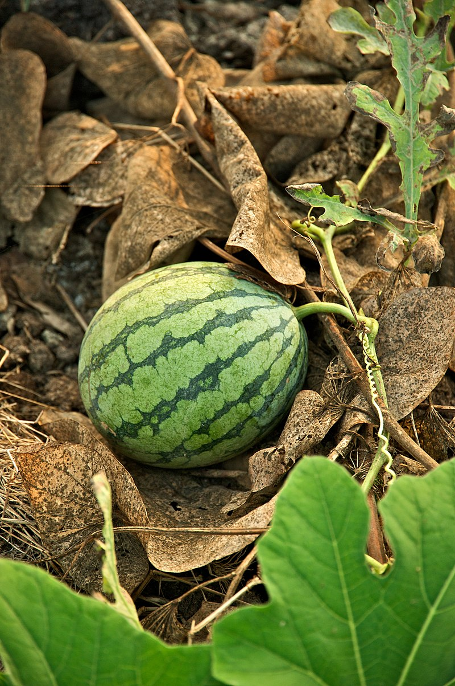

Back to Home Page
Welcome to Calvin's favourite food website!
Watermelon
Watermelon Nutrition Facts!
| Nutrient |
Amount Per 100 grams |
| Calories |
30 |
| Water |
91% |
| Protein |
0.6 grams |
| Carbohydrates |
7.6 grams |
| Sugar |
6.2 grams |
| Fiber |
0.4 grams |
| Fat |
0.2 grams |
| Potassium |
112 mg |
| Vitamin C |
8.1mg |
What A Watermelon Looks Like!

Extra Watermelon Facts!
- Watermelon is considered both a fruit and a vegetable
- Every part of the watermelon is edible
- Watermelons come in 1200 varieties
- The heaviest watermelon to date was 350 pounds
- Watermelons contain an anti-cancer compound
- Farmers in Japan have perfected the art of growing square watermelons